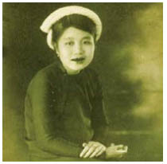

Đúng, cáo cái đã phát hiện ra bọn họ. Nhưng cái chuồng mà nó biến mất vào trong đó chỉ có duy nhất một cửa, và Louis sẽ gặp bất cứ thứ gì từ trong đó đi ra. Hắn ngáp nhiều ngang với thở, nhưng đôi mắt trông đã lại sáng rõ được năm phần, và hắn không phải là một tay súng tồi.
“Tôi có nên thả chúng ra không?” Tay huấn luyện chó khó lòng giữ nổi mấy con thú đang thè lưỡi thở hổn hển.
“Không. Chưa phải lúc.” Cảnh tượng bầy chó xé xác cáo ra thành nhiều mảnh làm Nerron buồn nôn. Chẳng còn lâu nữa và gã sẽ sớm nôn ọe như Lelou thôi.
Vừa nhắc đã đến...
“Ngươi chắc là hắn ta ở bên trong chứ?” Lão Bọ căng thẳng nhìn chằm chằm vào chuồng như thể muốn dùng mắt khoét một cái lỗ trên mấy bức tường mục. Lão rất tự hào về khẩu súng mà lão mới đeo ở thắt lưng gần đây.
“Đúng. Hắn đứng ngay sau cánh cửa.”
Reckless nghĩ bóng tối đã bao che cho anh, nhưng quên mất rằng anh đang đối phó với một Goyl.
“Tốt nhất là ta nên bắn vỡ sọ hắn.” Louis giương khẩu súng săn lên. “Hay là chúng ta cần bắt sống hắn?” Đam mê đi săn của dòng họ hắn. Hắn hào hứng đến nỗi quên cả ngáp. Người ta vẫn còn tin vào những câu chuyện về gián điệp Albion.
“Không. Cứ việc bắn chết hẳn,” Nerron đáp. Rốt cuộc thì gã không muốn Louis nghĩ rằng gã yếu mềm hơn hẳn. Reckless sẽ không ngu đến nỗi nhào ra trước nòng súng của Louis. Nerron chắc chắn là anh ta đã có quả tim. Anh ta lại một lần nữa nhanh hơn. 2-1 nghiêng về phía anh ta, Nerron.
Lelou lo lắng liếm môi. Khẩu súng giắt ở thắt lưng không giúp lão trở thành một chiến binh. Eaumbre đứng cùng Râu Sữa trước nhà mụ phù thủy. Sau những sự kiện xảy ra ở Vena, Louis ngày càng đối xử khắc nghiệt với nam nhân ngư, nhưng Eaumbre chỉ cam chịu những sỉ nhục ấy và hành động như thể hẳn ta chưa bao giờ từ bỏ công việc của một vệ sĩ.
Khi Nerron ra dấu, hắn ta đạp cửa nhà mụ phù thủy. Đúng vậy, hắn ta có thể rất có ích, mặc dù chẳng bao giờ biết chắc hắn ta đứng về phe nào. Có lẽ chỉ đứng về phe của chính hẳn ta. Mụ phù thủy ăn thịt trẻ con bay sượt qua hẳn ta và đáp xuống mái nhà với một tiếng kêu trầm đục. Những phù thủy hắc ám thích biến hình thành chim ác là, trong khi phù thủy lương thiện thích chim nhạn hơn. Chắc hẳn là Reckless đã quan sát thấy tất cả, nhưng không có gì động đậy sau cửa chuồng cả.
“Một điều chắc chắn là,” Louis lẩm bẩm, “khi nào chúng ta tìm ra cây nỏ thần, ta sẽ là người bắn phát đầu tiên.”
“À vâng? Thế thái tử định bắn ai?”
Louis ném cho Nerron một cái nhìn lạnh lùng. “Đương nhiên là một gã Goyl. Và với phát bắn thứ hai ta sẽ xóa sổ cả quân đội Albion.”
Eaumbre ngừng lại trước mặt Nerron. “Chỉ có một người đàn ông bị thương. Ông ta đang ngủ một giấc ngủ bị phù phép. Tôi có nên mang ông ta đến đây để những kẻ khác phải ra khỏi chuồng không?”
“Không. Đằng nào thì tôi cũng bắt hắn ra.” Nerron rút khẩu súng ngắn ổ quay ra và kiểm tra đạn. Vui vẻ một chút cũng chẳng hại gì.
Eaumbre im lặng bước đến bên gã. Rõ ràng là cái giếng không làm giảm hứng đi săn của hắn chút nào.
“Ta cũng đi cùng.” Louis ngáp.
Lelou cùng đám trứng cóc chết tiệt của lão! Thật may là người ta không phải giải thích với lão Bọ rằng thái tử mất mạng thì Asene Lelou cũng chẳng còn mạng mà giữ. “Tốt hơn là hãy để gã Goyl làm điều đó, thưa thái tử!” lão thế thọt. “Ai sẽ bắn tên gián điệp đây, nếu hắn thoát khỏi tay gã Goyl và nam nhân ngư?”
Louis lại ngáp. “Được thôi.” Hắn chĩa khẩu súng săn về phía cửa chuồng. “Ngươi còn chờ gì nữa, Goyl?”
Nerron những muốn cho hắn ta một liều nọc độc thằn lằn, thứ mà những thủ lĩnh bộ tộc mã não đen vẫn dùng để biến da người trần thành thứ chất nhầy nhụa mờ đục. Cây nỏ thần, Nerron. Nó đáng giá tất cả. Gã đã có thể cảm nhận cánh cung gỗ của nó giữa những ngón tay. Mọi tay săn kho báu sẽ phải mất ngủ nhiều đêm vì ghen tị. Khuôn mặt xấu xí của gã sẽ tô điểm cho mọi trang nhất các báo, các vua chúa sẽ phải cầu xin sự phục vụ của hắn. Chỉ có bộ tộc mã não đen muốn gã phải chết nếu Kami’en lên ngôi vua Lothringen và Albion. Họ sẽ nguyền rủa cái ngày mà họ đã thả một thằng bé con lai năm tuổi về nhà thay vì dìm chết nó dưới hồ.
Nerron để tay huấn luyện chó và gã người hầu lại với Louis. Bọn họ ngu ngốc và ồn ào, không xứng tầm với đối thủ này. Nhưng gã giao cho Râu Sữa nhiệm vụ thả mấy con ngựa quỷ ra và xua chúng vào rừng. Sẽ thật hổ thẹn nếu Reckless trốn thoát trên lưng ngựa.
Nerron đứng dưới bóng cây cho đến lúc khuất khỏi tầm nhìn từ cửa chuồng. Reckless không có con mắt nhìn xuyên qua bóng tối, và không có làn da đen như đêm, nhưng cáo cái ở bên cạnh anh ta có giác quan sắc bén như của một Goyl.
Gã đi vài bước nhanh nhẹn băng qua sân. Tựa lưng vào thành chuồng... Reckless không còn đứng sau cánh cửa nữa. Nerron chỉ có thể thấy được bấy nhiêu.
Mèo vờn chuột.
Gã đẩy cửa chuồng.
Một chiếc xe cút kít. Một đống rơm. Củi khô phù thủy dùng làm chổi cưỡi. Đặc biệt là cáo cái có thể ở bất cứ đâu trong này. Reckless sẽ bắn lén gã chăng? Có thể. Dù anh ta là người có nguyên tắc hơn Nerron. Theo những gì người ta kể, anh ta có những quan điểm lỗi thời về danh dự và lối cư xử chuẩn mực, dù có lẽ anh ta chẳng bao giờ thừa nhận.
Bọn họ đâu rồi?
Trong một thoáng Nerron lo rằng bọn họ đã dùng phép thuật nào đó để trốn thoát - nhưng trong lãnh thổ của một phù thủy hắc ám không phép thuật nào ứng nghiệm trừ phép thuật của chính bà ta. Hy vọng Lelou sẽ lo liệu giữ cho Louis không ngủ gục trước cửa chuồng.
Nam nhân ngư do dự đứng ở lối vào, Gì vậy? Đột nhiên hắn sợ bóng tối sao? Đi lùng sục đi, đồ ngu!
Nerron đâm thanh kiếm vào đống củi khô.
“Ta thấy là ngươi rất giỏi chơi trốn tìm!” Giọng gã nghe như đá granit mài nhẵn. Cái giếng ẩm ướt vẫn còn ngấm trong tận xương tủy gã. “Ta chỉ cần trái tim thôi. Rồi ta sẽ thả ngươi và con cáo cái đi.” Bản thân gã sẽ giữ lời hứa, nhưng về phần Louis dĩ nhiên gã không thể đảm bảo.
Một Follet lao vụt qua trước mặt gã, lũ chuột sột soạt trong đống rơm. Một nơi hẻo lánh, nhưng trong thế giới loài cáo cái chuồng bẩn thỉu của một mụ phù thủy ăn thịt trẻ con cũng có thể trở nên lãng mạn.
Đây rồi. Gã nghe tiếng ai đó thở. Giờ thì người bắt được bắn ta rồi, Nerron. Tất cả những phiền phức chỉ vì gã đã tin vào bầy sói.
Một tiếng động làm gã xoay người lại, nhưng đó chỉ là nam nhân ngư giẫm phải bẫy chuột của mụ phù thủy. Đồ da vảy đần độn! Hắn rên rỉ và chửi thề trong lúc rút ủng ra khỏi cái bẫy sắt. Tiếng ồn làm Nerron sao nhãng trong một phần nghìn giây, nhưng như vậy là quá đủ. Nerron nghe tiếng “cách” của búa súng trước khi kịp quay người lại.
Reckless chỉ đứng cách gã vài bước chân và đang chĩa súng vào tim Nerron. Anh ta trốn ở đâu chứ? Giữa những đống rơm? Eaumbre bước những bước khập khiễng về phía gã.
“Tôi sẽ không làm thế.” Bàn tay trái của Reckless ướt đẫm. Máu chảy nhỏ giọt từ ống tay áo anh ta.
“Đó là giá phải trả cho ông bạn bị thương của ngươi? Quý tộc làm sao.” Nerron vẫy nam nhân ngư lùi lại. “Mụ phù thủy cắt rõ sâu nhỉ.”
Reckless nhún vai. “Đừng lo. Ta vẫn bóp cò được.”
“Đúng vậy, nhưng bao lâu? Ngươi sẽ chết trước khi kịp thoát ra khỏi cửa.” Nerron liếc nhanh ra phía sau, nhưng chẳng thấy con cáo cái đâu cả. “Thôi nào. Quả tim ở đâu?”
Reckless mỉm cười.
Ồ Nerron, ngươi là một thằng ngu.